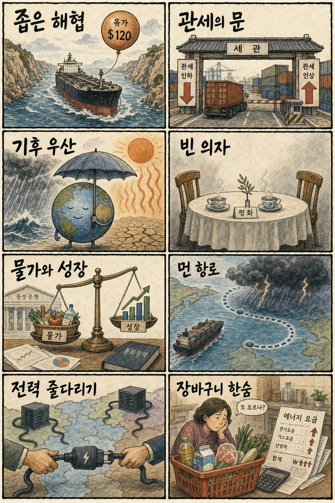
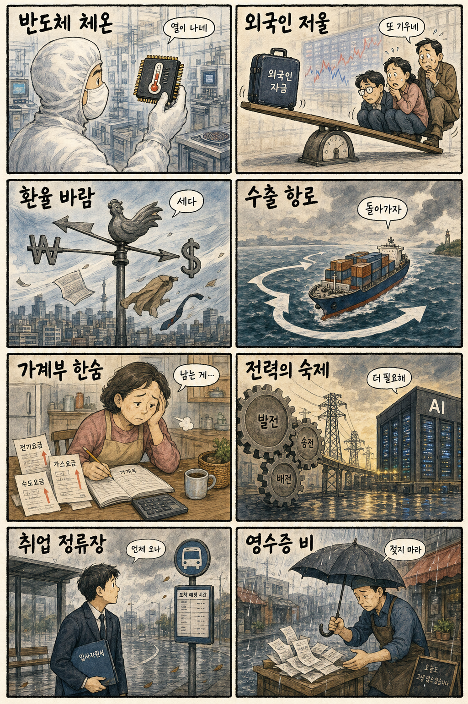

01
AI 반도체주 급락 뉴욕증시 약세…엔비디아·마이크론 하락세 주도
내용요약 직전 미국장 흐름을 전한 기사입니다. 중동 리스크와 반도체 수급이 엇갈리며 지수별 차별화가 나타났습니다.
예상여파 국내 개장 초반에는 반도체 대형주와 환율, 미국 선물 반응이 지수 방향을 결정할 가능성이 큽니다.
MORNING_BRIEFING_20260717
작성 시각: 2026-07-17 06:39 KST · 직전 미국장 및 2026-07-17 KST 당일 공개 기사 기준
직전 미국 정규장은 3대 지수가 모두 하락했고 기술주 비중이 큰 나스닥의 낙폭이 가장 컸습니다. 반도체·AI주 매도가 한국 성장주에도 하방 압력을 줄 수 있어 개장 초 외국인 수급과 환율을 함께 확인해야 합니다.
| 지수 | 종가 | 전일 대비 | 한국 증시 영향 |
|---|---|---|---|
| 다우존스 | 52,552.97 | -0.20% | 경기민감·방어주 간 온도차가 커져 코스피 대형주 선별 흐름에 영향 |
| S&P 500 | 7,533.77 | -0.51% | 위험선호 둔화 여부가 외국인 수급과 지수 변동성을 좌우 |
| 나스닥 종합 | 25,881.95 | -1.47% | 반도체 반등 여부가 국내 AI·성장주 심리에 직접 연결 |
다우존스 52,552.97(-0.20%); S&P 500 7,533.77(-0.51%); 나스닥 종합 25,881.95(-1.47%)로 확인됩니다. 나스닥의 상대적 약세가 두드러졌습니다.
미국 반도체·AI주 매도가 국내 HBM과 성장주 수급으로 전이되는지 우선 확인합니다.
AI 수요는 데이터센터 전력·ESS로 넓어졌지만 메모리 업황 우려와 실적 가시성을 함께 따져야 합니다.
반도체 대형주 수급, 원/달러 환율, 외국인 선물 매매와 전일 저점 지지가 핵심입니다.
| 종목 | 전일 등락률 | 메모 |
|---|---|---|
| SK하이닉스 | -11.53% | 2,082,000원 → 1,842,000원. 나스닥과 AI 반도체 흐름이 국내 HBM 대표주 수급으로 연결되는 종목 |
| HD현대일렉트릭 | -3.16% | 823,000원 → 797,000원. AI 데이터센터 전력·ESS와 전력망 투자 논리가 연결되는 종목 |
| 한화에어로스페이스 | +1.51% | 929,000원 → 943,000원. 중동·우크라이나 안보 뉴스가 방산 수출 기대와 연결되는 종목 |
| 지수 | 종가 | 전일 대비 | 해석 |
|---|---|---|---|
| 다우존스 | 52,552.97 | -0.20% | 경기민감·방어주 간 온도차가 커져 코스피 대형주 선별 흐름에 영향 |
| S&P 500 | 7,533.77 | -0.51% | 위험선호 둔화 여부가 외국인 수급과 지수 변동성을 좌우 |
| 나스닥 종합 | 25,881.95 | -1.47% | 반도체 반등 여부가 국내 AI·성장주 심리에 직접 연결 |
방산, 데이터센터 전력망·ESS, 통신·필수소비 등 방어 업종
AI 반도체·고밸류 성장주, 유가 민감 항공·화학, 실적 가시성이 낮은 테마주
내용요약 직전 미국장 흐름을 전한 기사입니다. 중동 리스크와 반도체 수급이 엇갈리며 지수별 차별화가 나타났습니다.
예상여파 국내 개장 초반에는 반도체 대형주와 환율, 미국 선물 반응이 지수 방향을 결정할 가능성이 큽니다.
내용요약 직전 미국장 흐름을 전한 기사입니다. 중동 리스크와 반도체 수급이 엇갈리며 지수별 차별화가 나타났습니다.
예상여파 국내 개장 초반에는 반도체 대형주와 환율, 미국 선물 반응이 지수 방향을 결정할 가능성이 큽니다.
내용요약 직전 미국장 흐름을 전한 기사입니다. 중동 리스크와 반도체 수급이 엇갈리며 지수별 차별화가 나타났습니다.
예상여파 국내 개장 초반에는 반도체 대형주와 환율, 미국 선물 반응이 지수 방향을 결정할 가능성이 큽니다.
내용요약 미국 특징주 분야의 당일 주요 보도입니다. 제목과 공개 시각 기준으로 오늘 시장 흐름과 연결되는 변수로 분류했습니다.
예상여파 관련 업종의 장중 거래대금과 후속 보도, 정책 반응을 함께 확인해야 합니다.
내용요약 미국 특징주 분야의 당일 주요 보도입니다. 제목과 공개 시각 기준으로 오늘 시장 흐름과 연결되는 변수로 분류했습니다.
예상여파 관련 업종의 장중 거래대금과 후속 보도, 정책 반응을 함께 확인해야 합니다.
금요일 한국장은 직전 미국장 흐름을 반영해 기술주와 수출주 중심의 선별 장세가 예상됩니다. 반도체 대형주의 외국인 매수 연속성, 원/달러 환율, 주말을 앞둔 차익실현 강도를 우선 확인하고 단기 급등 종목은 거래대금 지속성을 분리해 봐야 합니다.
| 한국 종목 | 연결 이유 | 단기 확인 포인트 |
|---|---|---|
| SK하이닉스 | 미국 반도체 급락과 메모리 업황 우려가 국내 HBM 대표주의 가격 발견 과정으로 직접 연결됩니다. | 미국 반도체 선물, 외국인 매도 강도, 전일 저점 지지와 낙폭 축소 |
| HD현대일렉트릭 | AI 데이터센터 확대가 전력기기·전력망 투자 수요로 이어져 반도체 조정기에도 차별화 논리를 가집니다. | 전력기기 동반 강도, 신규 수주 뉴스, 기관 수급과 밸류에이션 부담 |
| 한화에어로스페이스 | 중동·우크라이나 안보 뉴스가 방산 수출 기대와 고환율 효과를 함께 자극할 수 있습니다. | 전일 고가 지지, 방산 섹터 상대강도, 국제 안보 뉴스의 후속 강도 |
미국장 하락 충격이 외국인 현·선물 매도와 코스닥 거래대금 위축으로 이어지는지 봅니다.
당일 국제 뉴스가 원/달러 환율과 국제유가 기대에 미치는 영향을 점검합니다.
미국 반도체 급락 뒤 국내 대형주의 낙폭 축소와 저가 매수 유입을 확인합니다.
나스닥 선물의 반등 여부가 국내 성장주의 장중 위험선호 회복을 지지하는지 봅니다.
핵심 요약: AI 산업은 반도체 수요 논쟁, 데이터센터 전력망, AI 활용 신뢰성, 중국·미국 기술 통제 이슈가 동시에 움직이고 있습니다.
내용요약 AI 데이터센터 확대가 전력망·ESS·인프라 투자로 이어지는 흐름을 다룬 기사입니다. 병목이 전력 설비 영역으로 옮겨가는 모습입니다.
예상여파 전선·전력기기·원전·ESS 밸류체인은 개별 수주와 정책 뉴스에 따라 상대강도를 보일 수 있습니다.
내용요약 AI·테크 분야의 당일 주요 보도입니다. 제목과 공개 시각 기준으로 오늘 시장 흐름과 연결되는 변수로 분류했습니다.
예상여파 관련 업종의 장중 거래대금과 후속 보도, 정책 반응을 함께 확인해야 합니다.
내용요약 AI 활용과 규제, 산업 적용 범위가 넓어지고 있음을 보여주는 기사입니다. 기술 확산의 속도와 신뢰성 논쟁이 동시에 커지고 있습니다.
예상여파 AI 소프트웨어·클라우드·보안·데이터 인프라 종목은 실적 연결성이 있는 기업 위주로 선별해야 합니다.
내용요약 AI 반도체와 메모리 공급망을 둘러싼 당일 기사입니다. 투자자들은 실적 눈높이와 수요 둔화 가능성을 동시에 확인하고 있습니다.
예상여파 삼성전자·SK하이닉스·반도체 장비주의 장중 수급이 민감하게 반응할 수 있습니다.
내용요약 AI 데이터센터 확대가 전력망·ESS·인프라 투자로 이어지는 흐름을 다룬 기사입니다. 병목이 전력 설비 영역으로 옮겨가는 모습입니다.
예상여파 전선·전력기기·원전·ESS 밸류체인은 개별 수주와 정책 뉴스에 따라 상대강도를 보일 수 있습니다.
핵심 요약: 미국·이란 공방 속 유가는 소폭 하락했지만 호르무즈·홍해 항로 불안은 남아 있습니다. 우크라이나·나토 안보와 미국 관세 대응도 위험 프리미엄을 좌우합니다.
내용요약 중동 긴장과 원유 공급 우려가 시장의 핵심 변수로 부상했다는 보도입니다. 유가와 환율이 함께 움직이면 위험자산 선호가 약해질 수 있습니다.
예상여파 정유·해운·방산에는 단기 관심이 붙을 수 있고, 항공·화학·소비주는 비용 부담을 점검해야 합니다.
내용요약 우크라이나와 유럽 안보 협력, 방공·드론 이슈가 이어지고 있다는 보도입니다. 전쟁 장기화가 방산 수요를 계속 자극합니다.
예상여파 국내 방산·항공우주 종목은 해외 수주 기대와 환율 효과를 함께 점검해야 합니다.
내용요약 세계뉴스 분야의 당일 주요 보도입니다. 제목과 공개 시각 기준으로 오늘 시장 흐름과 연결되는 변수로 분류했습니다.
예상여파 관련 업종의 장중 거래대금과 후속 보도, 정책 반응을 함께 확인해야 합니다.
내용요약 세계뉴스 분야의 당일 주요 보도입니다. 제목과 공개 시각 기준으로 오늘 시장 흐름과 연결되는 변수로 분류했습니다.
예상여파 관련 업종의 장중 거래대금과 후속 보도, 정책 반응을 함께 확인해야 합니다.
내용요약 세계뉴스 분야의 당일 주요 보도입니다. 제목과 공개 시각 기준으로 오늘 시장 흐름과 연결되는 변수로 분류했습니다.
예상여파 관련 업종의 장중 거래대금과 후속 보도, 정책 반응을 함께 확인해야 합니다.

핵심 요약: 국내는 미국 반도체주 급락의 증시 전이, 반도체 산단 전력망, 기업 성과배분과 생활산업 성장 이슈를 함께 살펴야 합니다.
내용요약 직전 미국장 흐름을 전한 기사입니다. 중동 리스크와 반도체 수급이 엇갈리며 지수별 차별화가 나타났습니다.
예상여파 국내 개장 초반에는 반도체 대형주와 환율, 미국 선물 반응이 지수 방향을 결정할 가능성이 큽니다.
내용요약 AI 반도체와 메모리 공급망을 둘러싼 당일 기사입니다. 투자자들은 실적 눈높이와 수요 둔화 가능성을 동시에 확인하고 있습니다.
예상여파 삼성전자·SK하이닉스·반도체 장비주의 장중 수급이 민감하게 반응할 수 있습니다.
내용요약 국내뉴스 분야의 당일 주요 보도입니다. 제목과 공개 시각 기준으로 오늘 시장 흐름과 연결되는 변수로 분류했습니다.
예상여파 관련 업종의 장중 거래대금과 후속 보도, 정책 반응을 함께 확인해야 합니다.
내용요약 국내뉴스 분야의 당일 주요 보도입니다. 제목과 공개 시각 기준으로 오늘 시장 흐름과 연결되는 변수로 분류했습니다.
예상여파 관련 업종의 장중 거래대금과 후속 보도, 정책 반응을 함께 확인해야 합니다.
내용요약 AI 활용과 규제, 산업 적용 범위가 넓어지고 있음을 보여주는 기사입니다. 기술 확산의 속도와 신뢰성 논쟁이 동시에 커지고 있습니다.
예상여파 AI 소프트웨어·클라우드·보안·데이터 인프라 종목은 실적 연결성이 있는 기업 위주로 선별해야 합니다.
